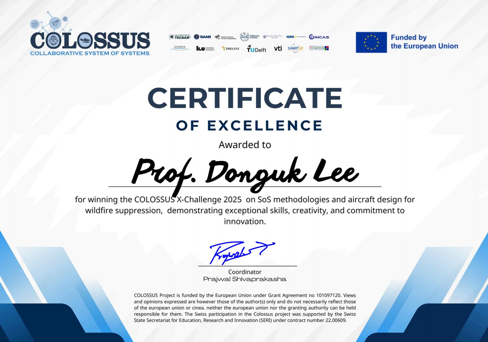

2026
-
17 Sep 2026 · Conference
Agentic AI workflow for aircraft conceptual design presented at ICAS 2026, Sydney
"Developing an Agentic AI Workflow for Automated Conceptual Design of Aircraft Using RISPECT+" — Song, J., Park, S., Lee, D., Kang, Y., Kim, Y., and Lee, S., Proceedings of the ICAS 2026 Congress, Sydney, Australia, Sep. 13–17, 2026.
-
Sep 2026 · Journal
Turboelectric propulsion analysis method published in Energy (Vol. 360)
"Improved turboelectric propulsion system analysis method for electrified aircraft conceptual design" (co-corresponding author) — Cho, J., Park, J., Jeong, T., Lee, D., and Yee, K., Energy, Vol. 360, 2026, 141490. DOI 10.1016/j.energy.2026.141490
-
Jul 2026 · Project
New MOTIE project on drone reference models starts (2026.07 – 2028.12)
산업통상부 과제 「도심물류 및 민군융합드론 참조모델 기술 개발」 착수
Reference-model technology for urban-logistics and civil–military convergence drones: an MBSE and digital-twin-based reusable reference model linking design, operation, and verification, funded by the Ministry of Trade, Industry and Energy (MOTIE); AADL is the principal investigator.
-
Jul 2026 · Project
New KITECH project on TTE certification test scenarios starts (2026.07 – 2026.11)
한국생산기술연구원 과제 「상용 프로펠러 밸런서 기반 TTE 인증 시험 시나리오 구축」 착수
Test scenarios for TTE certification based on a commercial propeller balancer, with the Korea Institute of Industrial Technology (KITECH); AADL is the principal investigator.
-
12 Jun 2026 · Conference
Byeongjun Park presents at IEEE ITEC 2026, Michigan
"Electro-Thermally Coupled Dynamic Performance Modeling of Lithium-Ion Cells for Improved Analysis of Electric Propulsion Systems" — Park, B., and Lee, D., IEEE ITEC Conference, Michigan, United States, Jun. 10–12, 2026.
-
12 Jun 2026 · Conference
Giho Lee presents at the AIAA AVIATION 2026 Forum, San Diego
"Integrated Optimization Framework for Performance and Operational Design of Airborne Wildfire Suppression Platforms" — Lee, G., and Lee, D., Proceedings of the AIAA AVIATION 2026 Forum, San Diego, United States, Jun. 8–12, 2026.
-
Jun 2026 · Journal
Battery voltage-prediction paper accepted in IEEE Transactions on Transportation Electrification
"A Voltage–Prediction Framework for Lithium–Polymer Batteries in UAV Mission–Level Analysis" (early access) — Park, B., and Lee, D., IEEE Transactions on Transportation Electrification, early access, 2026. DOI 10.1109/TTE.2026.3706544
-
Apr 2026 · Conference
Two papers presented at the KSAS Spring Conference 2026
2026 한국항공우주학회 춘계학술대회 발표 (송주훈, 박병준)
Papers: 「설계 지식 검색을 활용한 Multi-Agent 기반 항공기 개념 설계 및 최적화 프레임워크」 (송주훈, 강유업, 박세웅, 이동욱, 이상아) and 「전기추진시스템 해석을 위한 고출력 리튬 이온 배터리의 GPR 기반 전기-열 연계 동적 성능 모델 및 항공기 운용 한계 분석 연구」 (박병준, 이동욱).
-
Mar 2026 · Journal
Propeller damage diagnosis paper published in IEEE Access (Vol. 14)
"Classification and Diagnosis of Propeller Damages Using FFT-Based Motor Current Signature Analysis of DC-Link Current" — Lee, G., Park, S., Choi, S., Lee, S., Jeong, J., and Lee, D., IEEE Access, Vol. 14, 2026, pp. 35126–35139. DOI 10.1109/ACCESS.2026.3670231
2025
-
14 Nov 2025 · Conference
KSAS Autumn Conference 2025, Goseong
2025 한국항공우주학회 추계학술대회 (고성) 참가
송주훈, 강유업, 박세웅, 이동욱, 이상아, 「Agentic AI 기반 항공기 개념 설계 플랫폼 개발을 위한 기능 구현」, 한국항공우주학회 추계학술대회, 2025 (Nov. 11–14, 2025).
-
17 Oct 2025 · Conference
Giho Lee presents at the 15th EASN International Conference, Madrid
"Integrated Aerial System Design for Wildfire Fighting and Surveillance with Tactical Considerations" — Lee, G., Park, B., Kim, M., Oh, S., Park, S., Choi, S., and Lee, D., Proceedings of the 15th EASN International Conference, Madrid, Spain, Oct. 14–17, 2025.
-
28 Aug 2025 · Award
2nd place in the DLR COLOSSUS X-Challenge 2025
DLR(독일항공우주국) COLOSSUS X-Challenge 준우승
Certificate of Excellence from the German Aerospace Center (DLR), COLOSSUS project, for the System of Systems-Driven Wildfire Suppression Aircraft Design Framework. Final ranking: 1st Purdue University, 2nd Hanseo University, 3rd Georgia Institute of Technology.

COLOSSUS X-Challenge 2025 — 2nd place (Certificate of Excellence), German Aerospace Center (DLR). -
4 Apr 2025 · Conference
Four papers presented at the KSAS Spring Conference 2025
2025 한국항공우주학회 춘계학술대회 발표 4편
Papers (Apr. 3–4, 2025): 「전기추진 시스템 해석을 위한 배터리 방전 실험 기반 개선된 리튬 폴리머 배터리 성능 모델링 연구」 (박병준, 이동욱), 「LA 산불 사례 기반 항공 진화 전략 비교 분석」 (이기호, 이동욱), 「수소연료전지-배터리 하이브리드 전기추진시스템 기반 Part 25급 항공기 비용 예측 연구」 (오세웅, 이흔주, 이동욱), and 「1차원 다중물리 PEMFC 모델을 이용한 하이브리드 UAM 항공기 개념설계」 (김민성, 이동욱).
-
20 Feb 2025 · Conference
Giho Lee presents at the Korean Society of Hazard Mitigation conference
한국방재학회 발표 (이기호)
이기호, 차성은, 이동욱, 「야간 산불 대응 무인기와 확산·피해 예측 시스템의 통합 개발 연구」, 한국방재학회 춘계학술대회, 2025.
2024
-
18 Nov 2024 · Award
Excellence Award at the 2024 Chungcheongnam-do Disaster and Safety Technology Competition
2024 충청남도 재난안전기술공모 우수상 수상
산불 진압을 위한 무인 이종 드론군 개발 및 디지털 트윈 시스템 구축 — awarded by 충청남도 (Chungcheongnam-do).
-
15 Nov 2024 · Conference
KSAS Autumn Conference 2024, Jeongseon
2024 한국항공우주학회 추계학술대회 (정선) 발표
Papers: 「산불 진압 시뮬레이션을 활용한 산림 소방 무인기의 최적 운용 전략」 (이기호, 이동욱) and 「전기추진 시스템 해석을 위한 배터리 방전 실험 기반 개선된 리튬 이온 배터리 성능 모델링 연구」 (박병준, 이동욱).
-
4 Apr 2024 · Conference
KSAS Spring Conference 2024 (Jeju)
2024 한국항공우주학회 춘계학술대회 (제주) 참가
AADL took part in the KSAS Spring Conference 2024 held in Jeju.
2023
-
17 Nov 2023 · Conference
KSAS Autumn Conference 2023, Hongcheon
2023 한국항공우주학회 추계학술대회 (홍천) 참가
Papers: 「화성 탐사 비행체-로버 협업 시스템을 위한 ConOps 및 비행체 형상 후보군 제시」 (박성중, 이동욱, 권순명, 이관중) and 「화성 탐사 수직이착륙 비행체 개념설계 연구」 (이동욱, 권순명, 박성중, 이관중).
-
Mar 2023 · Lab
AADL founded at the Department of Unmanned Aircraft Systems, Hanseo University
연구실 개설
The Advanced Aircraft Design Laboratory (차세대비행체설계연구실) is located in Room 213, Aviation Technical Education Center, Hanseo University.